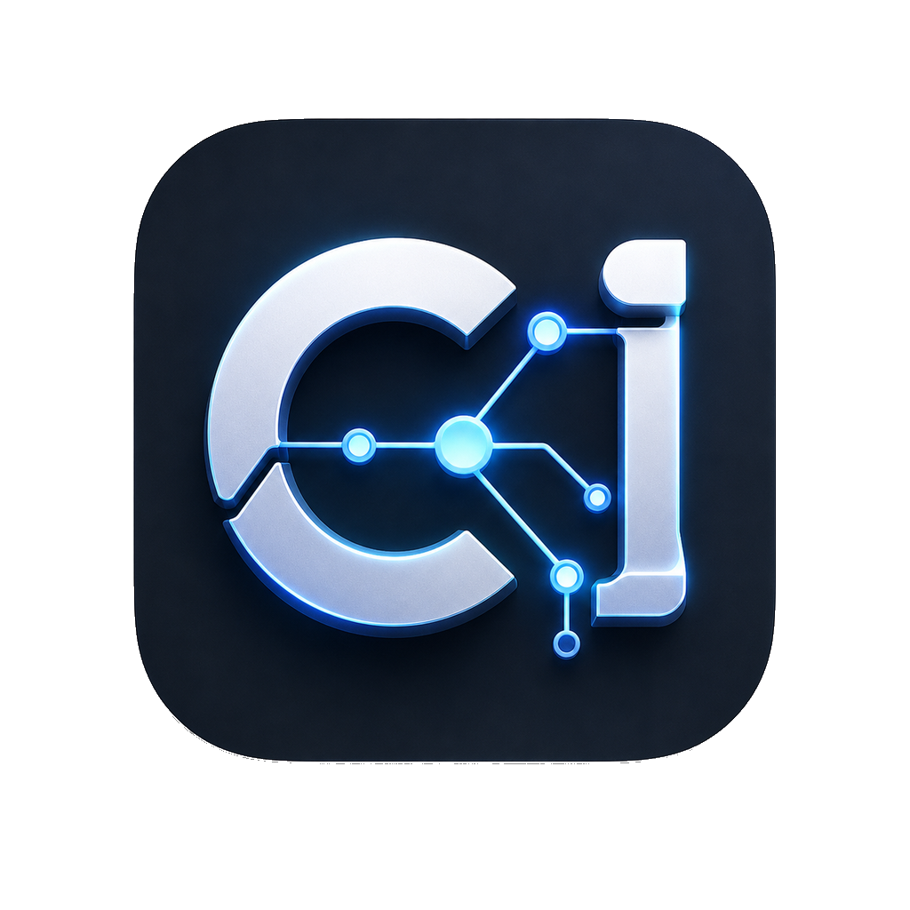
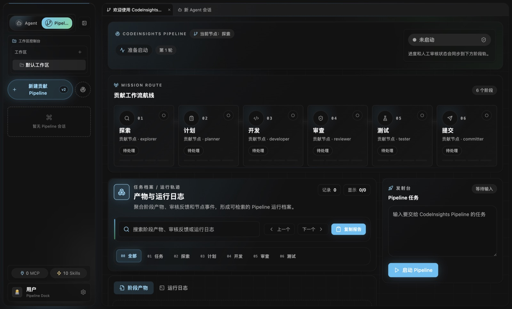
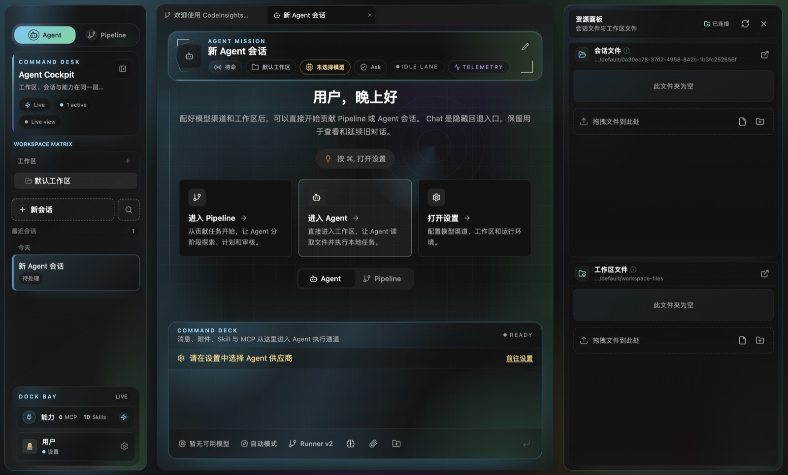
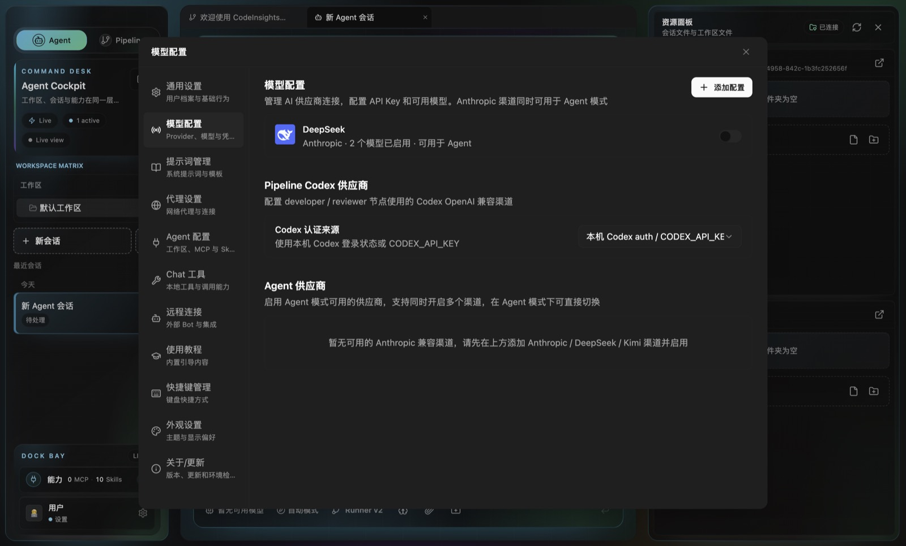
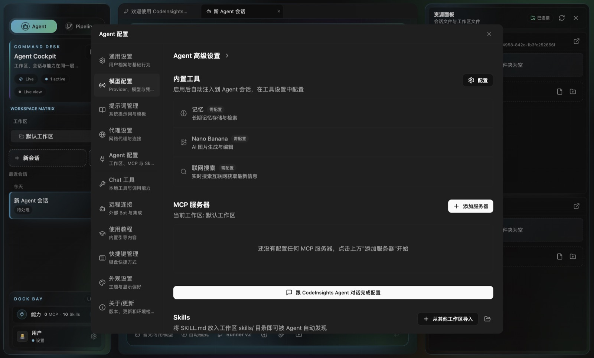
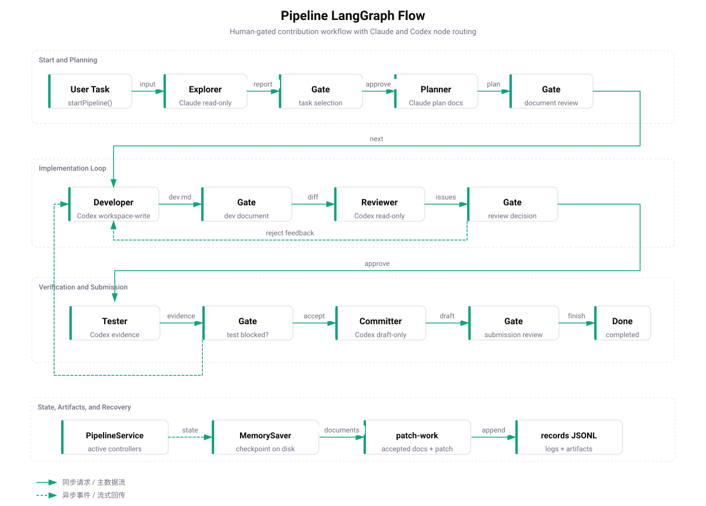
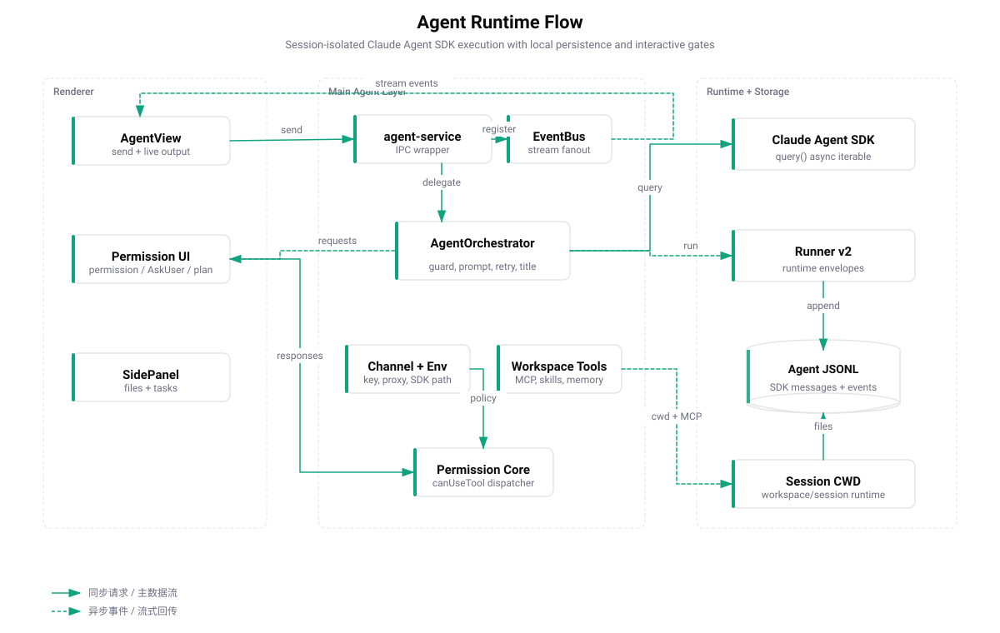
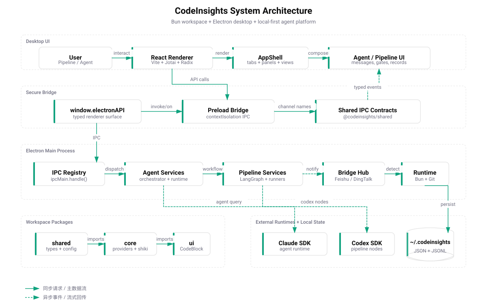
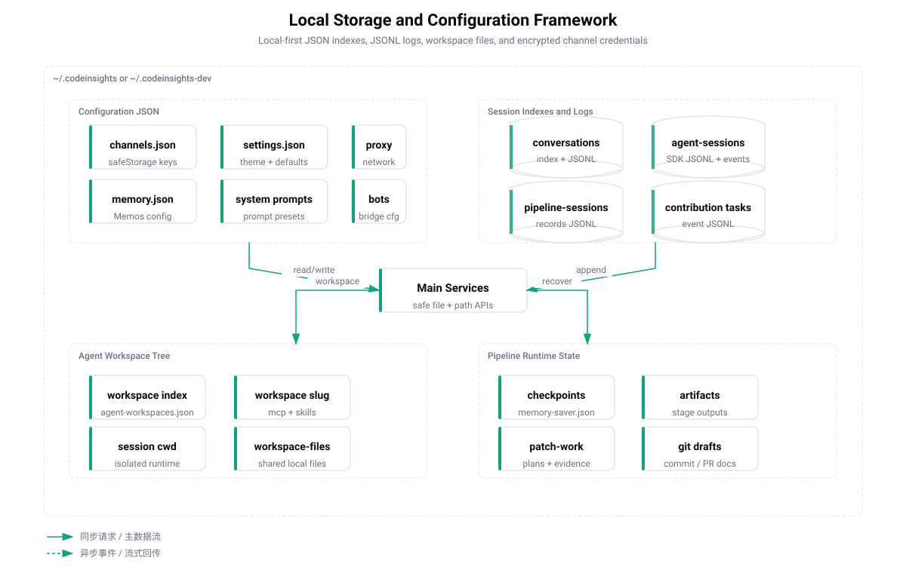
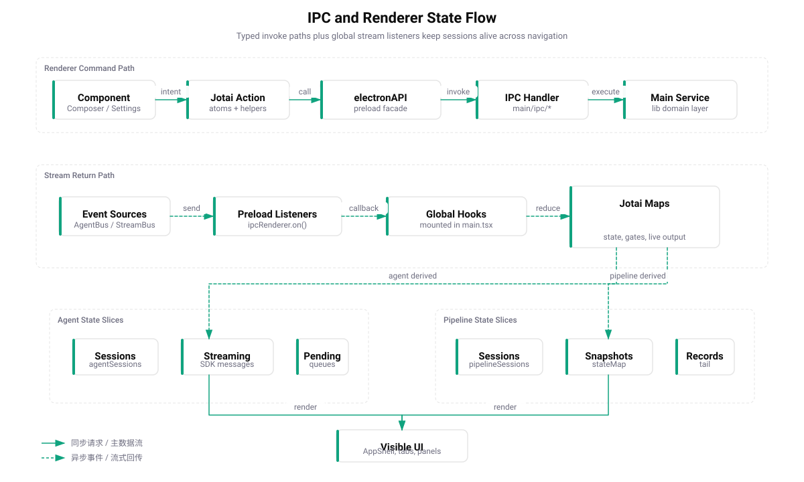

Plan
先形成可审查计划 Start with a reviewable plan
Explorer 和 Planner 先把贡献机会、风险、验证路径和待确认事项整理成阶段产物，避免直接冲进修改。 Explorer and Planner turn contribution opportunities, risks, verification paths, and open questions into staged artifacts before edits begin.

CodeInsights
面向开源贡献的 AI Agent 桌面工作台 AI Agent desktop workbench for open-source contribution
把一次性聊天改造成可计划、可审查、可验证的贡献流程。
Pipeline 负责阶段和证据，Agent 负责执行，本地 JSONL 负责回放。
Turn one-off chat into planned, reviewable, verifiable contribution work.
Pipeline owns stages and evidence, Agent owns execution, and local JSONL keeps the replay trail.
为什么需要它 Why it exists
Plan
Explorer 和 Planner 先把贡献机会、风险、验证路径和待确认事项整理成阶段产物，避免直接冲进修改。 Explorer and Planner turn contribution opportunities, risks, verification paths, and open questions into staged artifacts before edits begin.
Execute
Agent 读取工作区、调用工具、等待权限和 AskUser；Pipeline 在人工 gate 处暂停，而不是把风险藏在自动化里。 Agent reads the workspace, calls tools, waits for permissions and AskUser; Pipeline pauses at human gates instead of hiding risk inside automation.
Prove
会话、事件、checkpoint、artifacts 和工作区文件都优先落到本机，方便恢复、对比、排障和开源协作。 Sessions, events, checkpoints, artifacts, and workspace files stay local first so recovery, comparison, debugging, and collaboration remain inspectable.
真实产品界面 Real product surface
以下素材来自真实 Electron 开发窗口，采集时使用隔离配置目录，避免读取本机已有渠道、会话和凭证。 These captures come from a real Electron development window using an isolated config directory to avoid local channels, sessions, and credentials.
6 秒真实录屏 6-second real run
首页首屏使用真实 Pipeline 截图建立产品信号，这段录屏提供更完整的界面节奏。 The hero uses a real Pipeline screenshot for product signal; this video shows the broader interface rhythm.



Pipeline v2

阅读目标与仓库上下文，发现候选贡献任务。 Reads the goal and repository context to discover candidate contribution tasks.
输出计划、风险、验证路径和可审查文档。 Produces plans, risks, verification paths, and reviewable documents.
通过 Codex SDK / CLI 在工作区中实现修改并记录开发证据。 Uses Codex SDK / CLI to implement changes in the workspace and record development evidence.
只读审查 diff，聚焦正确性、回归、安全和测试缺口。 Reviews diffs read-only, focusing on correctness, regressions, security, and test gaps.
运行验证命令，收集测试证据和 patch-set 摘要。 Runs verification commands and collects test evidence plus patch-set summaries.
生成提交信息、PR 标题和正文草稿，等待最终确认。 Drafts commit messages, PR titles, and PR bodies for final confirmation.
Agent Runtime
Agent IPC 监听器挂在 Renderer 顶层，页面切换时流式输出、权限请求和 AskUser 仍会进入 Jotai 状态。 Agent IPC listeners mount at the renderer root, so streams, permission requests, and AskUser prompts still enter Jotai state across view changes.
每个工作区有独立 MCP 配置、Skills、workspace files 和 session cwd，适合长期任务与可审计自动化。 Each workspace has isolated MCP config, Skills, workspace files, and session cwd for long-running auditable automation.
Agent 模式当前面向 Anthropic Messages 兼容渠道：Anthropic、DeepSeek、Kimi API 和 Kimi Coding。 Agent mode targets Anthropic Messages compatible providers: Anthropic, DeepSeek, Kimi API, and Kimi Coding.

本地数据与架构 Local data and architecture



当前能力 Current capabilities
Anthropic、OpenAI、DeepSeek、Google、Kimi、智谱、MiniMax、豆包、通义千问和自定义 OpenAI 兼容端点。 Anthropic, OpenAI, DeepSeek, Google, Kimi, Zhipu, MiniMax, Doubao, Qwen, and custom OpenAI-compatible endpoints.
工具权限、AskUser、ExitPlan、Pipeline gate 都按 session 隔离，后台会话不丢请求。 Tool permissions, AskUser, ExitPlan, and Pipeline gates are isolated per session, preserving background requests.
飞书、钉钉、微信 Bridge 可以把远程消息转成本地桌面 Agent / Chat 会话请求。 Feishu, DingTalk, and WeChat bridges can turn remote messages into local desktop Agent / Chat session requests.
附件、PDF、Office、文本解析和文件预览贯穿 Chat 回退、Agent 工作区和任务资料。 Attachments, PDF, Office, text parsing, and file preview support Chat fallback, Agent workspaces, and task context.
Bun、Git、Node、WSL、Shell 环境、代理和自动更新由主进程统一检测与管理。 Bun, Git, Node, WSL, shell environment, proxy settings, and updater state are checked and managed from the main process.
Electron contextIsolation、preload 白名单、safeStorage 加密和 Codex Git guard 共同约束高风险操作。 Electron contextIsolation, preload allowlists, safeStorage encryption, and Codex Git guards constrain high-risk operations.
Quick Start
项目使用 Bun workspace。开发模式默认写入隔离的 `~/.codeinsights-dev/`，不会污染正式版本配置。 The project uses Bun workspaces. Development mode writes to isolated `~/.codeinsights-dev/` by default.
Bun 1.2.5+ · Git · macOS / Windows / Linux
在设置中创建 Agent 兼容渠道，并按需选择 Pipeline Codex 渠道或本机 Codex auth。 Create an Agent-compatible channel, then choose a Pipeline Codex channel or local Codex auth as needed.
按工作区隔离 MCP Server、Skills、workspace files 和会话工作目录。 Scope MCP servers, Skills, workspace files, and session cwd per workspace.
git clone https://github.com/zcxGGmu/CodeInsights.git
cd CodeInsights
bun install
bun run dev
# build and launch after compilation
bun run electron:build
bun run electron:start